Vedação perfeita
A cápsula é moldada no formato exato do seu canal auditivo, incluindo a segunda curva. Isso bloqueia fisicamente o ruído do palco em toda a faixa de frequências — sem bateria, sem circuito, sem perda de qualidade.

In-ear moldados sob medida para a anatomia do seu ouvido. Fabricação nacional, microdrivers de armadura balanceada e um especialista com você do primeiro contato até o fone no palco.
Lauana Prado · XE4/PRO
O in-ear só funciona de verdade quando veda o canal auditivo. É a vedação que entrega isolamento, grave real e a chance de monitorar em volume mais baixo — e ela só é perfeita quando a cápsula é feita a partir do molde do seu próprio ouvido.
A cápsula é moldada no formato exato do seu canal auditivo, incluindo a segunda curva. Isso bloqueia fisicamente o ruído do palco em toda a faixa de frequências — sem bateria, sem circuito, sem perda de qualidade.
Com o ruído externo bloqueado, você para de competir com o palco aumentando o volume. Ouve cada detalhe do seu retorno em níveis mais baixos e reduz o risco de dano à sua audição ao longo da carreira.
Feito sob medida, o monitor não pressiona nem escorrega. É a diferença entre um fone que você tolera por três músicas e um que você esquece que está usando durante a turnê toda.
O número de drivers não diz tudo — o que importa é a assinatura sonora certa para o que você toca. Responda abaixo para ver por onde começar, e nosso time fecha a escolha com você.
Qual é o seu principal objetivo com o fone?
Qual sonoridade você precisa no retorno?
Qual nível de detalhe e precisão você busca?
Encontramos seu ponto de partida.
Arraste para o lado para ver todos os modelos →
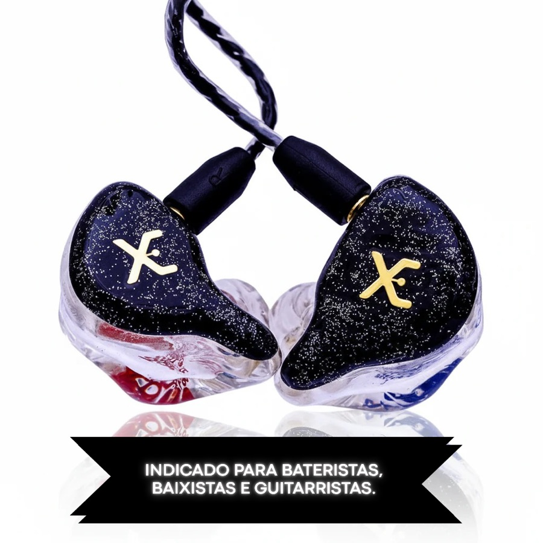
Entrada PROSeparação instrumental e som limpo
Três microdrivers com crossover de 3 vias: cada faixa de frequência no seu transdutor. O começo certo para quem está saindo do universal.
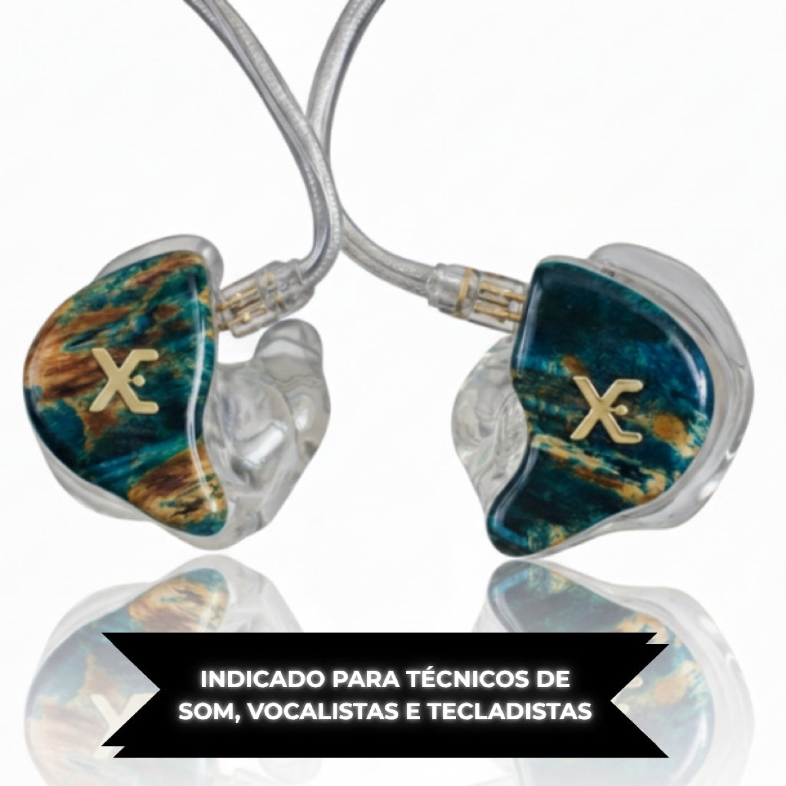
Musical, aveludado e equilibrado
Quatro drivers — dois para graves, um médio e um agudo. Graves aveludados e agudos cristalinos: o favorito de cantores e audiófilos.
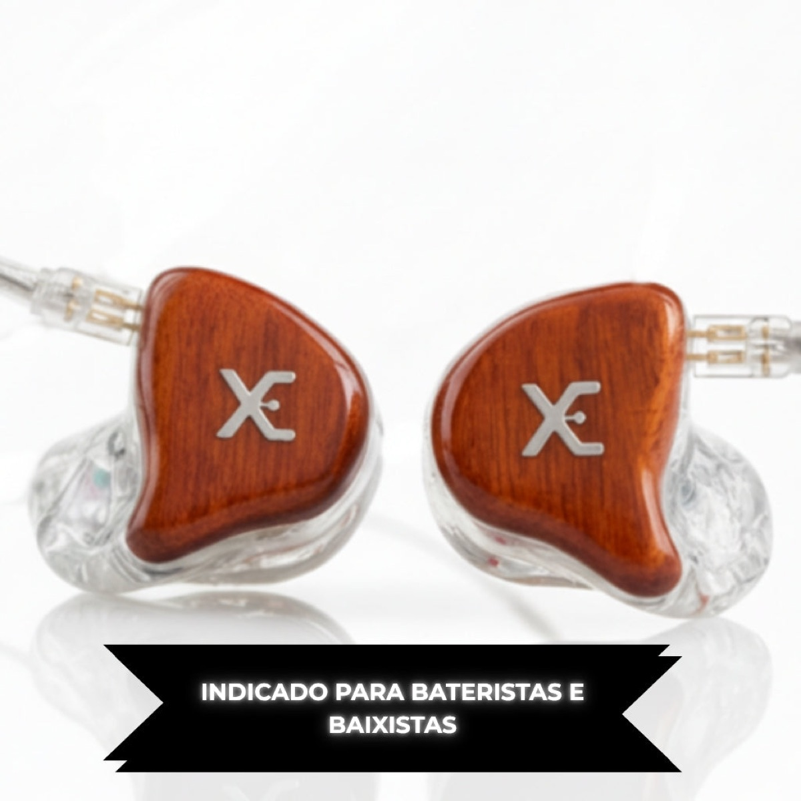
Mais graveO rei do punch
Maior sensibilidade e headroom dinâmico da linha. Dois drivers para graves e médios, um para altas. Bateristas, baixistas e DJs sentem a diferença na primeira música.
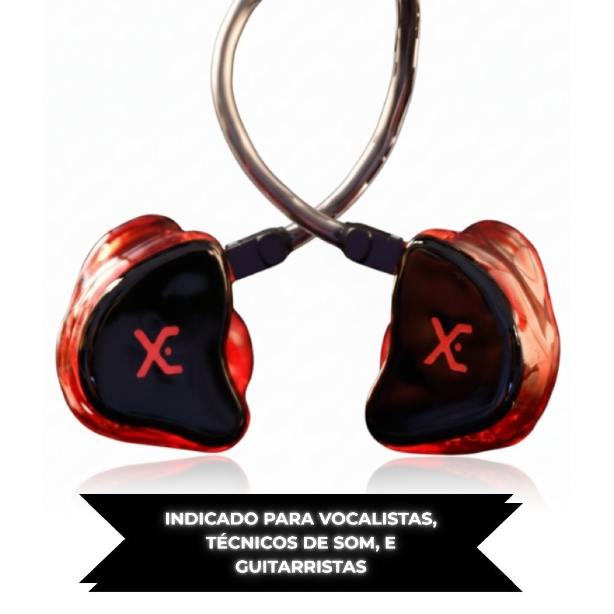
A definição de flat
Resposta plana, sem ênfase em nenhuma região. Agudo presente sem acentuação, médio equilibrado e grave somando ao sub de forma homogênea.
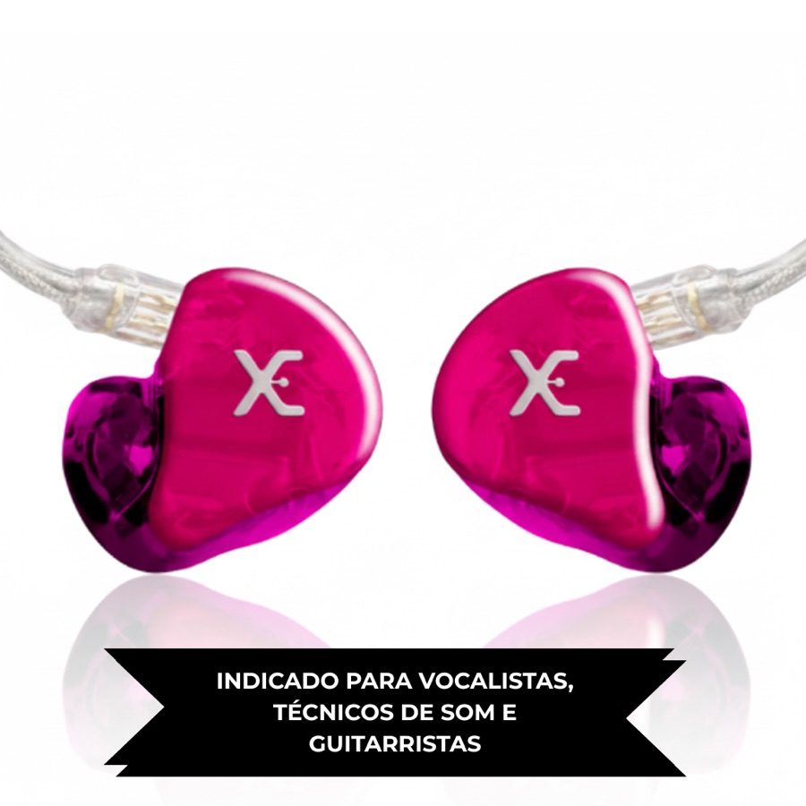
Transparente e cirúrgico
Drivers duplos para graves e médios mais um de precisão para as altas. Versatilidade absoluta: funciona no calor do palco e na fidelidade do estúdio.
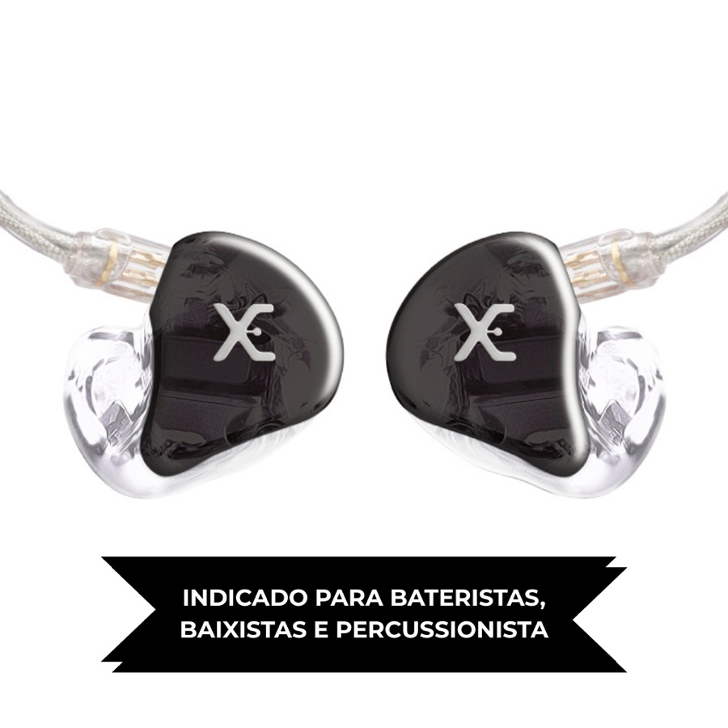
Analítico e brilhante
Resposta estendida e riqueza de detalhes para quem precisa de apresentação analítica impecável. A escolha de artistas consagrados.
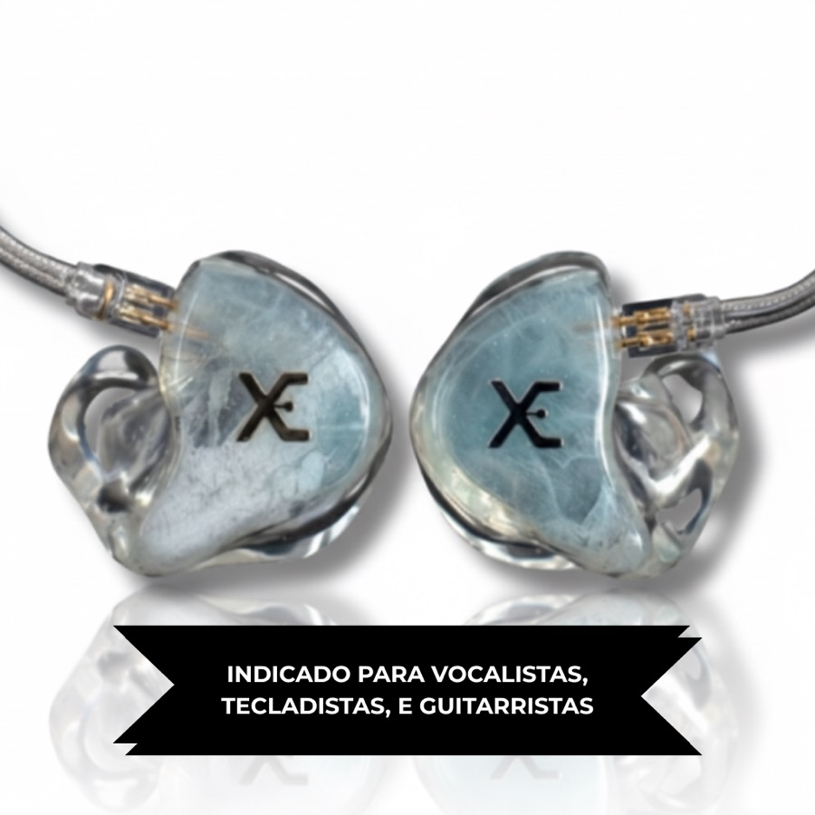
Grave articulado, equilíbrio total
Quatro drivers dedicados só aos graves, com presença texturizada. O equilíbrio entre a energia do palco e a sofisticação de estúdio.
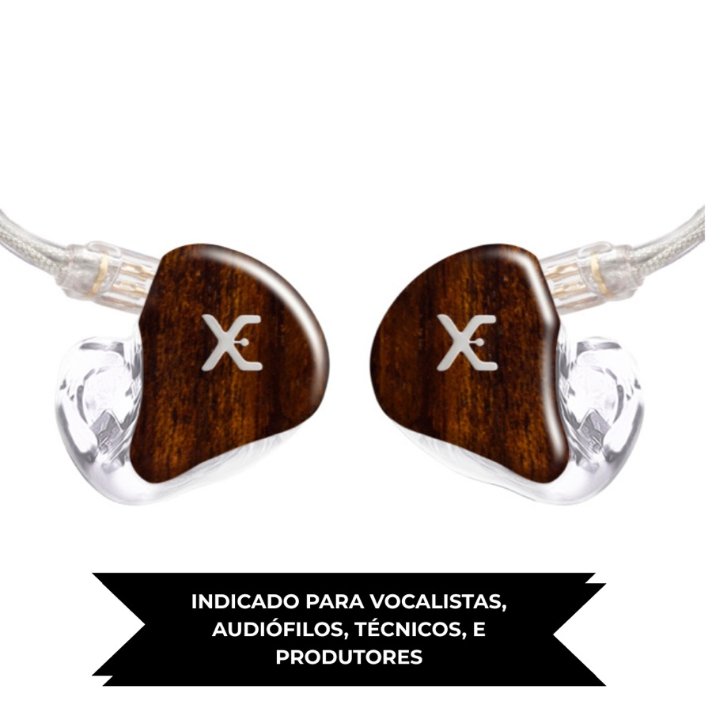
Padrão ouroResolução máxima e soundstage
Doze microdrivers: 4 subgraves, 4 graves, 2 médios e 2 agudos, com crossover de 4 vias. Separação de frequências e palco sonoro que desafiam a realidade.
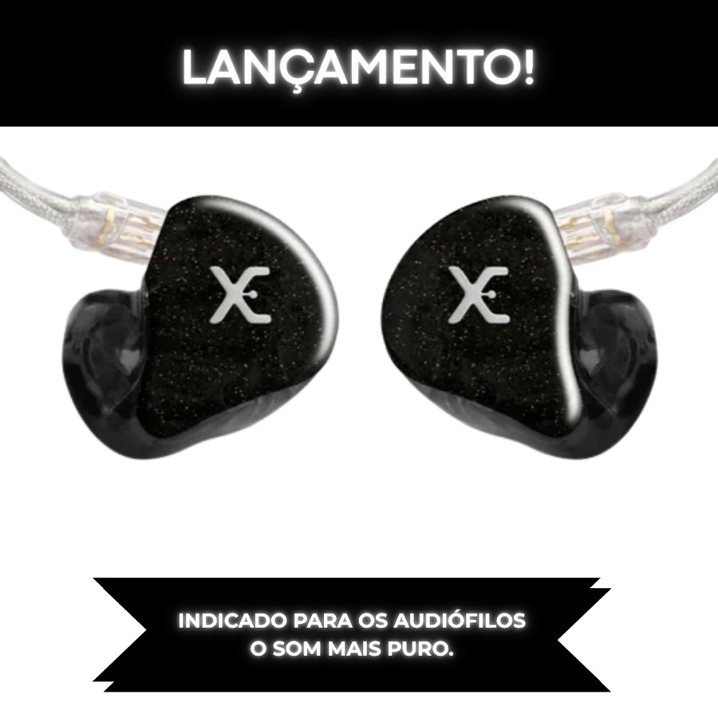
FlagshipO topo absoluto da linha
Catorze microdrivers com HexaDrive Array™ — seis drivers em formação hexagonal só para os médios — e driver E50D com resposta estendida até 50 kHz.
Valores a partir de, para a configuração base. Personalização de cápsula, faceplate, cabo e logo é orçada junto com o especialista.
Os universais usam ponteiras de silicone ou espuma e saem em até 2 dias úteis — sem pré-molde. É o caminho de quem quer entrar no in-ear antes de partir para o moldado.
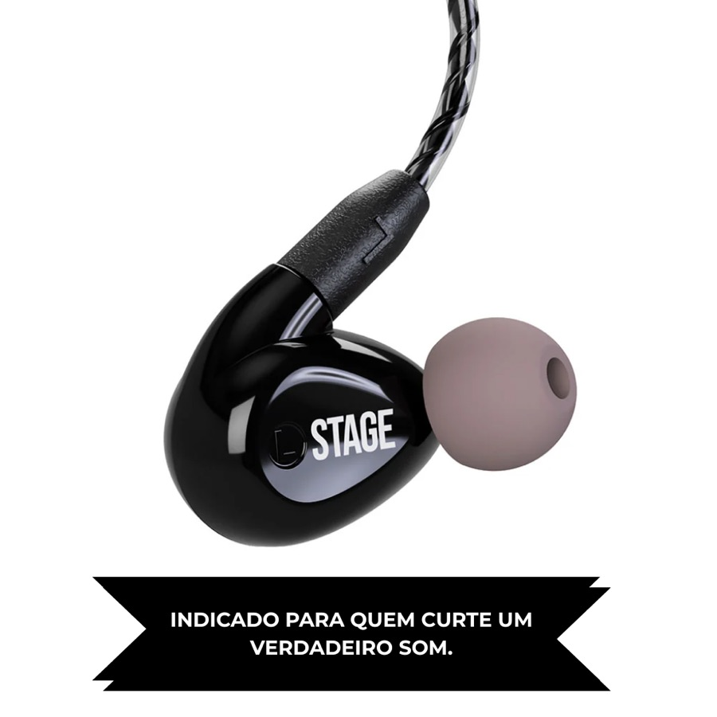
O primeiro passo
Driver dinâmico de neodímio com cápsula ergonômica e acoplador acústico 3D. Som detalhado e grave profundo para o dia a dia.
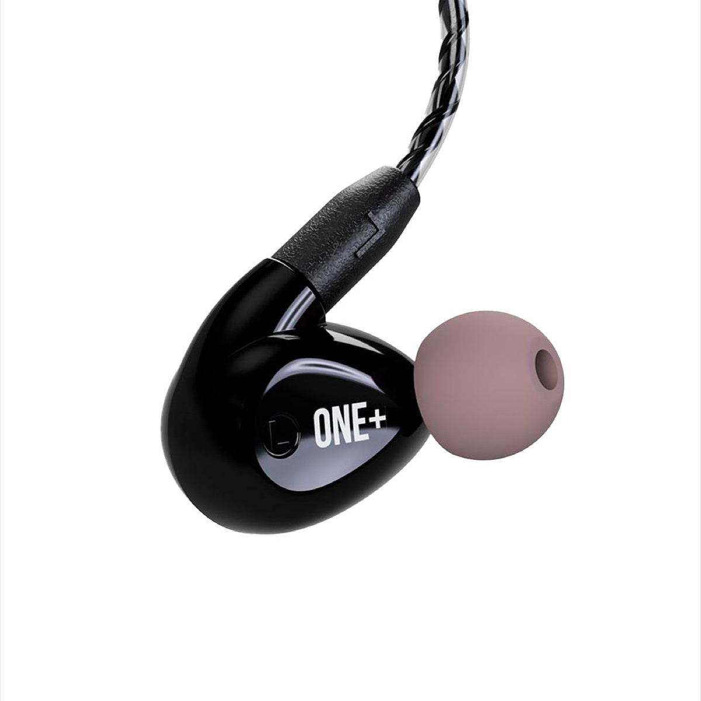
Topo da linha universal
Três microdrivers de armadura balanceada com tecnologia Knowles e crossover de 3 vias. Alta resolução com cabo removível.
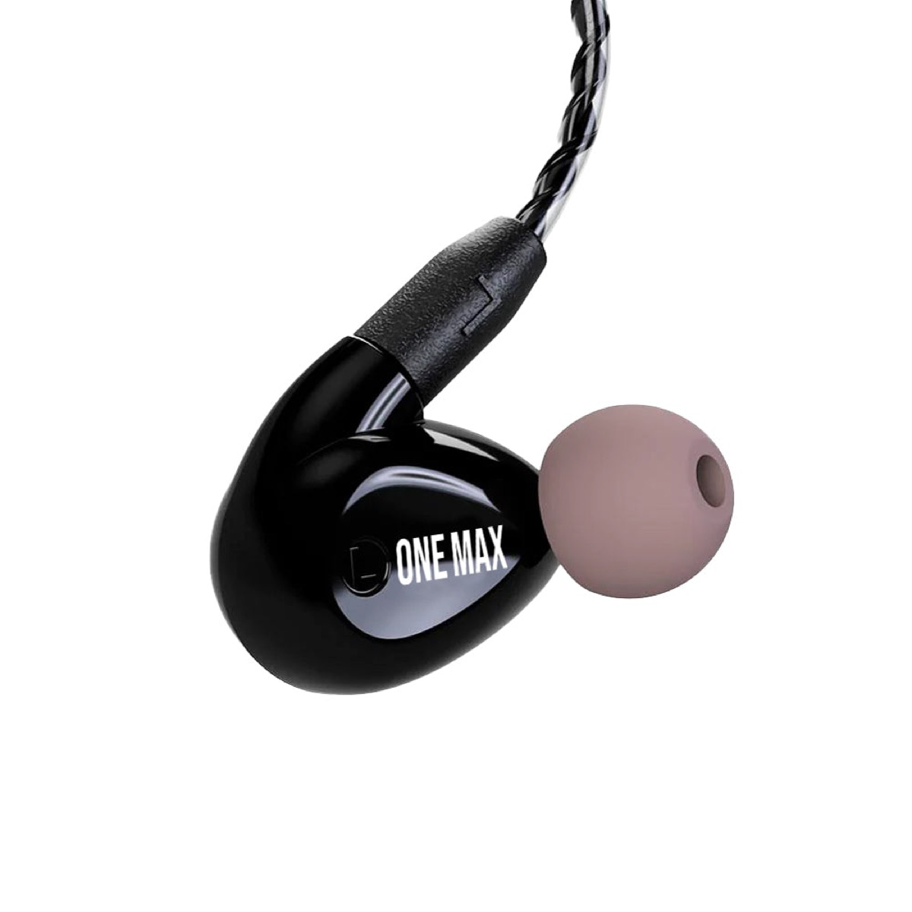
Quatro drivers sem pré-molde
Dois drivers para graves, um médio e um agudo com crossover integrado de 3 vias. A sonoridade da linha PRO em formato universal.
Seu fone é feito por encomenda, a partir do molde do seu ouvido. Por isso cada pedido passa por um especialista: para você acertar o modelo, o pré-molde chegar correto e o fone sair certo da primeira vez.
Você conta o que toca, onde toca e o que está faltando no seu retorno hoje. A gente indica o modelo — e explica por quê.
Indicamos um profissional perto de você. O molde precisa ser do tipo concha completa e incluir a segunda curva do canal auditivo.
Você envia fotos, vídeo ou faz uma videochamada com nosso time. Só seguimos com o pré-molde aprovado.
Cores da cápsula, faceplate, cabo e, se quiser, sua logomarca gravada. Envie o arquivo vetorizado e a gente adapta.
Pré-molde recebido, seu fone entra em produção: cerca de 4 semanas, com frete grátis e garantia de 1 ano.
Do sertanejo ao metal, do gospel à MPB: artistas e músicos que escolheram a Xtreme Ears para estar com eles no palco.


Assistência técnica própria, especializada nos fones que nós mesmos fabricamos. Antes de enviar qualquer coisa, você fala com o nosso suporte — boa parte dos casos se resolve na conversa.
O pré-molde é a base física do seu fone. Ele deve ser feito somente por um fonoaudiólogo, porque só um profissional garante segurança e precisão no procedimento. O molde precisa ser do tipo “concha completa” e incluir a segunda curva do canal auditivo. Nós indicamos um profissional perto de você através da nossa parceria com um centro auditivo com unidades em todo o Brasil.
A produção começa quando recebemos o seu pré-molde aprovado. Hoje o prazo é de aproximadamente 4 semanas. O prazo pode variar conforme o volume de trabalho — por isso combinamos a data de entrega com você durante o atendimento, especialmente se houver show ou turnê marcada.
O universal tem um duto sonoro com ponteira macia de silicone ou espuma, que se adapta ao contorno do ouvido. O moldado é fabricado sob encomenda, a partir do molde da sua anatomia, para um ajuste perfeito. Essa precisão é o que entrega o isolamento superior, o conforto por horas e a reprodução correta dos graves que o palco exige.
Significa mais separação de frequências, não necessariamente o som certo para você. O XE3/PRO tem 3 drivers e é a escolha de muitos bateristas por causa do punch e do headroom dinâmico; o XE4/PRO tem 4 e é flat, ideal para quem quer referência. A conversa com o especialista existe justamente para casar a assinatura sonora com o que você toca.
É uma ventilação variável que permite captar a ambiência externa — você escuta seu instrumento, os outros músicos e a plateia. Vem com 4 plugs que regulam o nível de som que passa pela ventilação, incluindo um fechado que restaura o isolamento completo. A contrapartida: quanto mais ventilação, maior a perda de graves e um pouco de clareza. Vale conversar antes de decidir.
Sim. Você escolhe as cores da cápsula, do faceplate e do cabo, e pode gravar sua logomarca ou desenho. Envie o arquivo vetorizado (CorelDraw ou Illustrator) para que ele seja adaptado ao tamanho do fone — logomarcas muito detalhadas podem precisar de ajustes por causa da miniaturização.
Fale com o nosso suporte no WhatsApp antes de enviar qualquer coisa — muita coisa se resolve na hora. Se for preciso enviar, nosso time passa as instruções. Durante a garantia de um ano, defeitos de fabricação e entupimentos são resolvidos sem custo de serviço, e a política de frete varia conforme o prazo: nos primeiros 7 dias, ida e volta por nossa conta.
Sim, todo o Brasil. Todo o atendimento consultivo acontece por WhatsApp, telefone ou videochamada, o pré-molde é feito com um fonoaudiólogo perto de você e o fone é enviado com frete grátis. Se preferir presencial, nosso endereço é Rua Dom José de Barros, 152, conj. 95/96 — Centro, São Paulo/SP.
Preencha os campos e abrimos o WhatsApp com a mensagem já escrita para o nosso time comercial. Sem formulário perdido, sem espera: a conversa começa na hora.
Um especialista Xtreme Ears com você do primeiro contato até a primeira música.